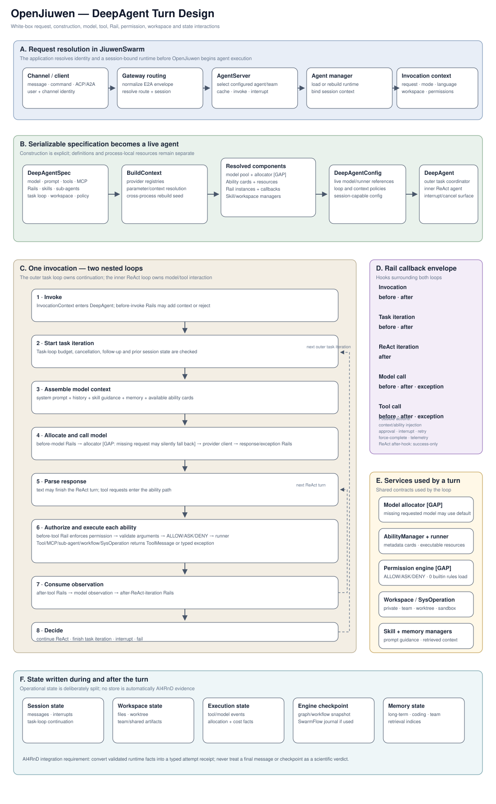
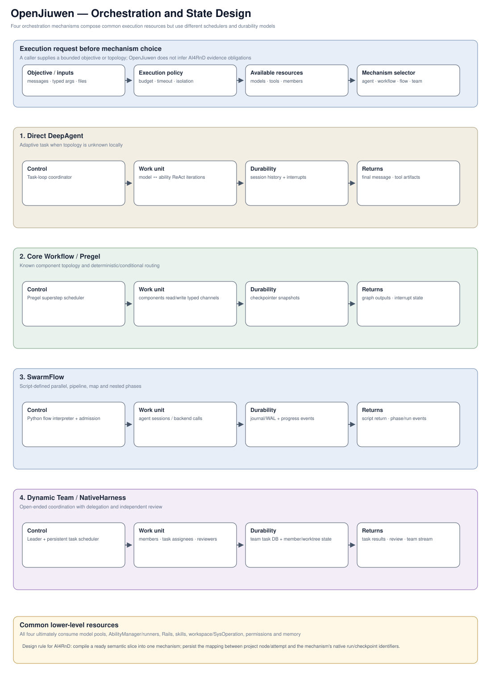
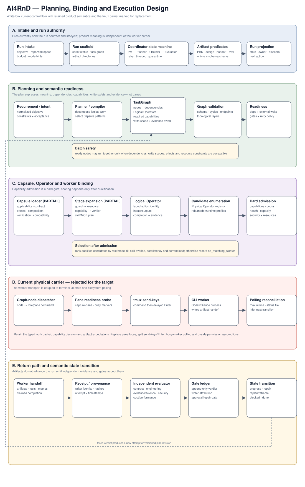
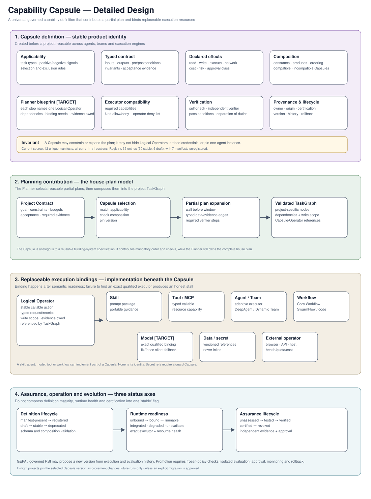
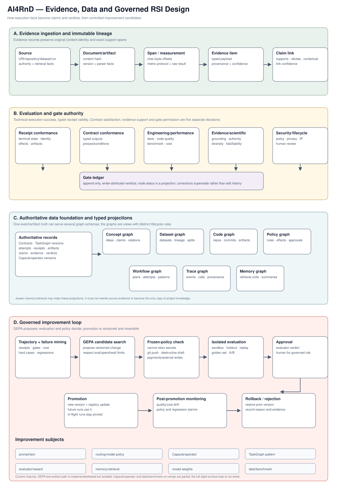

1. OpenJiuwen: one DeepAgent turn
Question answered: how do a JiuwenSwarm request, serializable agent definition, nested agent loops, Rails, models, abilities, permissions, workspaces, and state interact?

This replaces the opaque “runtime” box. It separates application request resolution, construction, the outer task loop, inner ReAct loop, middleware, shared services, and five state classes.
2. OpenJiuwen: orchestration and state
Question answered: what does each execution mechanism actually schedule, persist, and return?

Direct DeepAgent, Core Workflow/Pregel, SwarmFlow, and Dynamic Team are not interchangeable names. Each has a different controller, work unit, durability model, and result contract.
3. AI4RnD: planning, binding, execution, and return
Question answered: how does the current AI4RnD control plane go from intake to a TaskGraph, Capsule/Operator binding, physical execution, evaluation, and state transition?

The product semantics worth retaining are separated from the tmux/send-keys/polling carrier that should be retired.
4. Capability Capsule: definition, planning, binding, assurance
Question answered: what is a Capsule, how does it contribute to the Planner, what may execute it, and what does each status mean?

The Capsule remains universal and skill-centered. Skills, tools, MCP, agents, teams, workflows, models, data, and external operators are replaceable bindings—not the capability identity.
5. AI4RnD: evidence, data foundations, and governed RSI
Question answered: how do execution facts become evidence and verdicts, typed knowledge, and controlled improvement proposals?

GEPA is shown explicitly. It proposes candidates; frozen policy, isolated evaluation, approval, promotion monitoring, and rollback govern whether any version changes.